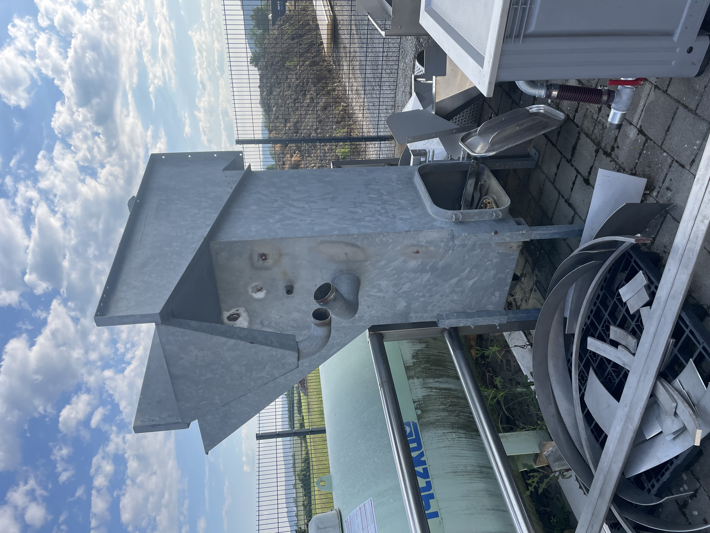

Kaufen
Geprüfte Gebrauchtmaschinen
Wechselnder Bestand an Einzelmaschinen und kompletten Linien. Auf Wunsch geprüft, gereinigt und mit Funktionsgarantie.
Verfügbarkeit anfragenNicht jedes Projekt braucht eine Neuanlage. Wir bieten gebrauchte Maschinen und Anlagen aus der Nahrungsmittelaufbereitung und Fördertechnik an — von uns geprüft und bei Bedarf aufbereitet. Auch Ankauf und Inzahlungnahme sind möglich.
Wechselnder Bestand an Einzelmaschinen und kompletten Linien. Auf Wunsch geprüft, gereinigt und mit Funktionsgarantie.
Verfügbarkeit anfragenSie lösen eine Linie auf oder modernisieren? Wir kaufen funktionsfähige Maschinen an oder nehmen sie bei einer Neuanlage in Zahlung.
Maschine anbietenBestehende Maschine erhalten statt ersetzen: Wir überholen, rüsten um und passen an Ihre Linie an — in eigener Werkstatt in Irslingen.
Aufarbeitung anfragen
Trennt Steine im Wasserbad — Kartoffeln schwimmen auf, Steine setzen sich ab. Schützt nachfolgende Wasch- und Sortiermaschinen vor Beschädigungen.
Unser Gebrauchtmaschinen-Bestand ändert sich ständig. Sagen Sie uns, welche Maschine oder welchen Prozessschritt Sie suchen — wir melden uns, sobald etwas Passendes verfügbar ist.
Gesuch aufgeben →Schreiben Sie uns kurz, worum es geht — wir antworten innerhalb von 24 h.
Kontakt aufnehmen →